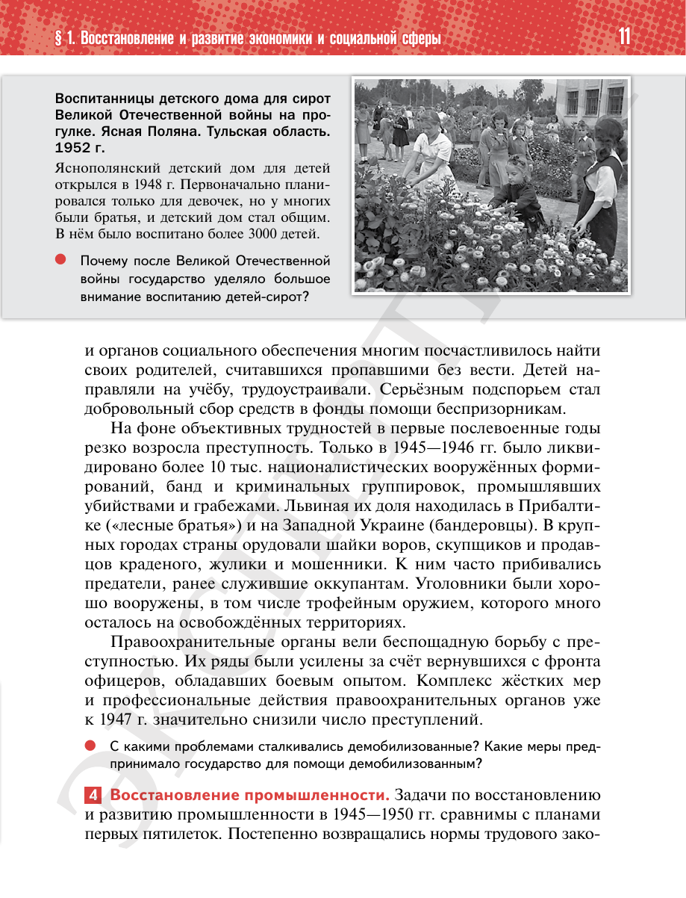

⌂
Мединский.нет
Последнее обновление: 21.08.2026
Мединский.нет
›
История России. 11 класс. Базовый уровень
›
Глава I. СССР в 1945—1991 гг.
›
§ 1. Восстановление и развитие экономики и социальной сферы
›
стр. 12

← стр. 11
Оглавление
стр. 13 →
×